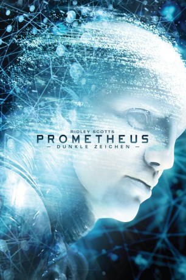

Auszeichnungen: für 1 Oscars nominiert
 gesehen am 25.04.2017
gesehen am 25.04.2017Alternativ: Prometheus
Auszeichnungen: für 1 Oscars nominiert gesehen am 25.04.2017
 
 IMDB-Wertung: 7.0 / 10
IMDB-Wertung: 7.0 / 10  Metascore:
Metascore: 
Wir schreiben das späte 21. Jahrhundert. Überall auf der Welt wurden bei den unterschiedlichsten uralten Kulturen, wie den Azteken oder Mesopotamiern, Zeichnungen gefunden, die auf eine Art Sternenkarte hinweisen. Eine Gruppe von Wissenschaftlern unter Leitung von Dr. Elizabeth Shaw soll im Auftrag des Weyland-Konzerns, gegründet vom Visionär Peter Weyland, diesen Zeichen nachgehen, die Shaw als eine Art Einladung deutet. Die Mission, die von Meredith Vickers für den Weyland-Konzern organisiert und überwacht wird, führt das Team und die Crew von Captain Janek an den Rand des Universums und in eine Welt jenseits der Vorstellungskraft. Was sie schließlich finden, ist nicht nur die mögliche Wiege der Menschheit, sondern auch der wahrscheinliche Untergang der menschlichen Rasse.
Jahr: 2012
Dauer: 124 Minuten
FSK: 16
Land: USA Studio: 20th Century FoxTonspuren: DTS - ,
Untertitel:
Auflösung: 1080p (1920×800) Größe: 5765 MB
Genre: Sci-Fi, Abenteuer, Mystery
Regisseur:  Ridley Scott
Ridley Scott
Drehbuch: Jon Spaihts, Damon Lindelof, Dan O'Bannon, Ronald Shusett
Soundtrack: Marc Streitenfeld
Darsteller:
 Noomi Rapace als Elizabeth Shaw
Noomi Rapace als Elizabeth Shaw Charlize Theron als Meredith Vickers
Charlize Theron als Meredith Vickers Idris Elba als Janek
Idris Elba als Janek Sean Harris als Fifield
Sean Harris als Fifield Benedict Wong als Ravel
Benedict Wong als Ravel Patrick Wilson als Shaw's Father
Patrick Wilson als Shaw's Father Peter O'Toole als T.E. Lawrence , archive footage, uncredited
Peter O'Toole als T.E. Lawrence , archive footage, uncreditedDatei: X:\7+mehr(A-Z)\Alien+Predator\Alien 5 - Prometheus - Dunkle Zeichen (2012, FSK16, 1920x800).mkv seit 14.02.2015
Festplatte: HD Collection-7+mehr(A-Z)+Person
 Es gibt insgesamt 17 Filme in der Gruppe '7+mehr(A-Z)\Alien+Predator'
Es gibt insgesamt 17 Filme in der Gruppe '7+mehr(A-Z)\Alien+Predator'